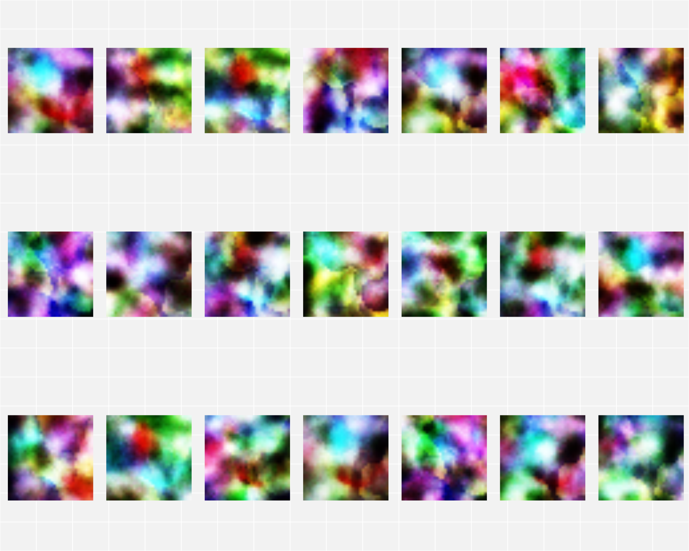

Aligning single cell RNA to histology tissue images
Compiled: October 07, 2021
Aligning_scRNAseq_to_Spatial_Transcriptomics.RmdIntroduction
Generalised Canonical Procrustes (gcproc) can align datasets of different modalities with varying data structure (e.g. sample by feature matrix, pixel image data, …) and varying dimensions. It can encode and transform image data to extract relevant features to be analysed jointly with other modalities. With parameters that encode multiple datasets into the same space, the weights act as learned functions that can (inverse) transform from one modality to another.
Here, a novel dataset from a variety of experimental methods called Spatial Transcriptomic Technology (example used here is thanks to NanoString’s Hackathon @ DevPost) that combines histology imaging tissue with measured gene expression, can be used to:
1 - Encode the histology pixel data into a representative space for feature extraction
2 - Recover gene expression using histology tissue with a few gene biomarkers relevant to the tissue
Step 0 - Prepare libraries
library(gcproc)
library(mclust)## Package 'mclust' version 5.4.7
## Type 'citation("mclust")' for citing this R package in publications.library(irlba)## Loading required package: MatrixStep 1 - Prepare datasets from NanoString GeoMX Spatial Transcriptomic Technology
Kidney spatial data is gratefully taken from the NanoString Hackathon @ DevPost. Here, 231 regions of interest have had gene expression measured at a spatial resolution. Corresponding overlapping image information of immunofluorescent kidney tissue is converted to a pixel by tile matrix, where each tile is 32 by 32 pixels by 3 Red-Green-Blue channels.
Single cell kidney data is also taken from Wu et al (2018) to be aligned to immunofluorescent kidney tissue. Here, the top 2000 shared variably genes are taken for all datasets containing gene expression.
kidney_nanostring_rnaseq_train <- read.delim("../../data/kidney_nanostring_spatial/Kidney_Raw_TargetCountMatrix.txt",row.names=1)
kidney_nanostring_pixel_train <- read.csv("../../data/kidney_nanostring_spatial/TRAIN_pixels_color.csv",row.names=1)
kidney_sc_rnaseq <- read.csv("../../data/kidney_nanostring_spatial/wu_counts.csv",row.names=1)
matched_genes <- row.names(kidney_nanostring_rnaseq_train)[row.names(kidney_nanostring_rnaseq_train) %in% row.names(kidney_sc_rnaseq)]
top_shared_var_genes <- sort(matched_genes[order(apply(kidney_nanostring_rnaseq_train[matched_genes,],1,var)+apply(kidney_sc_rnaseq[matched_genes,],1,var),decreasing = T)[1:1000]])
kidney_nanostring_rnaseq_train.select <- t(kidney_nanostring_rnaseq_train[top_shared_var_genes,])
kidney_sc_rnaseq.select <- t(kidney_sc_rnaseq[top_shared_var_genes,])
kidney_nanostring_rnaseq_train.select.copy <- kidney_nanostring_rnaseq_train.select <- kidney_nanostring_rnaseq_train.select
kidney_nanostring_pixel_train.select <- kidney_nanostring_pixel_trainStep 2 - Initialise gcproc parameters for both pixel encoding and gene recovery
The default parameters in the configuration variable are modified to adjust for the data.
config <- gcproc::extract_config(verbose=F)
config$i_dim <- 50
config$j_dim <- 50
config$max_iter <- 30
config$verbose <- FStep 3 - Run gcproc on histology immunofluorescent images to extract features from pixel data
Spatial Transcriptomic regions of interest (with gene expression measurements) of immunofluorescent kidney histology images are converted to tabular form by cutting the image into tiles of 32 by 32 pixels, and taking each tile as a sample, with pixels as the features. To extract relevant features that are not based on highly variable image noise and perturbations (e.g. rotation, pixel intensity, …), the pixel dimension is encoded into a reduced subspace to give information of higher quality.
The top 21 components out of 70 are plotted to reveal the structure and profile of the tile, each representing the spatial tissue and cell morphology.
data_list.encode <- list(
y=as.matrix(kidney_nanostring_pixel_train.select),
x=as.matrix(kidney_sc_rnaseq)
)
gcproc.encode <- gcproc::gcproc(
data_list = data_list.encode,
config = config
)
library(png)
library(ggplot2)
library(grid)
library(gridExtra)
convert_to_HEAT <- function(x){
e <- ecdf(x)
j <- e(x)
x <- array(j,dim=dim(x))
return(x)
}
# Plot top 21 components
gl <- lapply(c(1:21),function(i){
g <- (convert_to_HEAT(aperm(array(gcproc.encode$dimension_reduction[[1]]$feature_x.dim_reduce.code[,i],dim=c(3,32,32)),c(2,3,1))))
g <- rasterGrob(g, interpolate=TRUE)
p.main <- ggplot2::qplot(1:10, 1:10, geom="blank") +
annotation_custom(g, xmin=-Inf, xmax=Inf, ymin=-Inf, ymax=Inf)
p.main
})
gl <- lapply(gl,function(X){
X + theme(axis.line=element_blank(),axis.text.x=element_blank(),
axis.text.y=element_blank(),axis.ticks=element_blank(),
axis.title.x=element_blank(),
axis.title.y=element_blank(),legend.position="none",
panel.background=element_blank(),panel.border=element_blank(),panel.grid.major=element_blank(),
panel.grid.minor=element_blank(),plot.background=element_blank())
})
lm <- rbind(c(1,2,3,4,5,6,7),
c(8,9,10,11,12,13,14),
c(15,16,17,18,19,20,21)
)
gg1 <- arrangeGrob(
grobs = gl,
layout_matrix = lm
)
plot(gg1)
Step 4 - Recover gene expression on histology tissue with a few gene markers present
With the pixel information encoded to better represent the immunofluorescent kidney tissue, the newly encoded features can be used for further analysis. The transfer of parameters can be done via the anchor framework. Just as an anchor would position a ship at sea, an anchored parameter would freeze the parameter in place, while learning other parameters jointly in relation to the anchor.
An example analysis is the recovery of missing gene expression, imputed from image-based histology with a few kidney gene markers.
Here, 201 regions of interest (with pixel and all gene data) are randomly sampled from the total of 231 regions and treated as the training set. Thus, 30 regions are taken as missing and treated as the test set (with only pixel data and a list of key gene kidney markers). The key kidney gene markers assumed present in both training and test sets are PODXL, WT1, PAX2, VIM, AQP1, NPHS1, and B2M all known to be present in kidney cells.
The aim is to recover all other non-key genes via the pixels within the 30 regions in the test set, while taking the 201 other regions as the training set to be the main modelling source.
gene_marker_present_in_histology_taken_as_example <- c("PODXL","WT1","PAX2","VIM","AQP1","NPHS1","B2M")
set.seed(10)
train_ids <- sample(c(1:231),201)
design_recover <- gcproc::extract_recovery_framework(F)
design_recover.x <- kidney_nanostring_rnaseq_train.select - kidney_nanostring_rnaseq_train.select
design_recover.x[-train_ids,which(!colnames(kidney_nanostring_rnaseq_train.select) %in% c(gene_marker_present_in_histology_taken_as_example))] <- 1
design_recover.x[train_ids,which(colnames(kidney_nanostring_rnaseq_train.select) %in% c(gene_marker_present_in_histology_taken_as_example))] <- 0
design_recover$method <- c("knn")
design_recover$design.list <- list( y=NULL,
x=as.matrix(design_recover.x)
)
kidney_nanostring_rnaseq_train.select <- kidney_nanostring_rnaseq_train.select.copy*(1-design_recover.x) + do.call('cbind',lapply(c(1:dim(design_recover.x)[2]),function(X){(design_recover.x[,X])*median(kidney_nanostring_rnaseq_train.select.copy[which((1-design_recover.x)[,X]==1),X])}))
data_list.transfer <- list( y=as.matrix(kidney_nanostring_pixel_train.select),
x=as.matrix(kidney_nanostring_rnaseq_train.select)
)
join <- gcproc::extract_join_framework(F)
join$alpha <- c(1,1)
library(gcproc)
gcproc.transfer <- gcproc::gcproc(
data_list = data_list.transfer,
config = config,
recover = design_recover,
join = join
)
corr_genes <- do.call('c',lapply(c(1:dim(kidney_nanostring_rnaseq_train.select.copy)[2]),function(i){
cor(kidney_nanostring_rnaseq_train.select.copy[-train_ids,i],(gcproc.transfer$recover$predict.list[[2]])[-train_ids,i])
}))
other_than_key_gene.id <- which(!colnames(kidney_nanostring_rnaseq_train.select) %in% c(gene_marker_present_in_histology_taken_as_example))
corr_cells_remove_key_genes <- do.call('c',lapply(c(1:dim(kidney_nanostring_rnaseq_train.select.copy)[1])[-train_ids],function(i){
cor(kidney_nanostring_rnaseq_train.select.copy[i,other_than_key_gene.id],(gcproc.transfer$recover$predict.list[[2]])[i,other_than_key_gene.id])
}))
corr_data <- data.frame(Axis = c(rep("Gene Correlations",length(corr_genes)),rep("Cell Correlations",length(corr_cells_remove_key_genes))), Pearson = c(corr_genes,corr_cells_remove_key_genes))
library(ggplot2)
ggplot(corr_data, aes(x=Axis, y=Pearson)) +
geom_violin()
par(mfcol=c(4,2))
for (i in which(colnames(kidney_nanostring_rnaseq_train.select.copy)%in%c("HLA-A","CD74","AQP2","KRT8","NPHS2","ITGB1","PAX8","PDGFRA"))){
adj.r.squared <- summary(lm(kidney_nanostring_rnaseq_train.select.copy[-train_ids,i]~(gcproc.transfer$recover$predict.list[[2]])[-train_ids,i]))$adj.r.squared
plot(x = (gcproc.transfer$recover$predict.list[[2]])[-train_ids,i],y = kidney_nanostring_rnaseq_train.select.copy[-train_ids,i],main=paste(colnames(kidney_nanostring_rnaseq_train.select)[i]," \n Adj. R^2: ",adj.r.squared,sep=""), xlab = "recovered RNA levels", ylab = "Observed RNA levels",cex=1.5,pch=19)
}